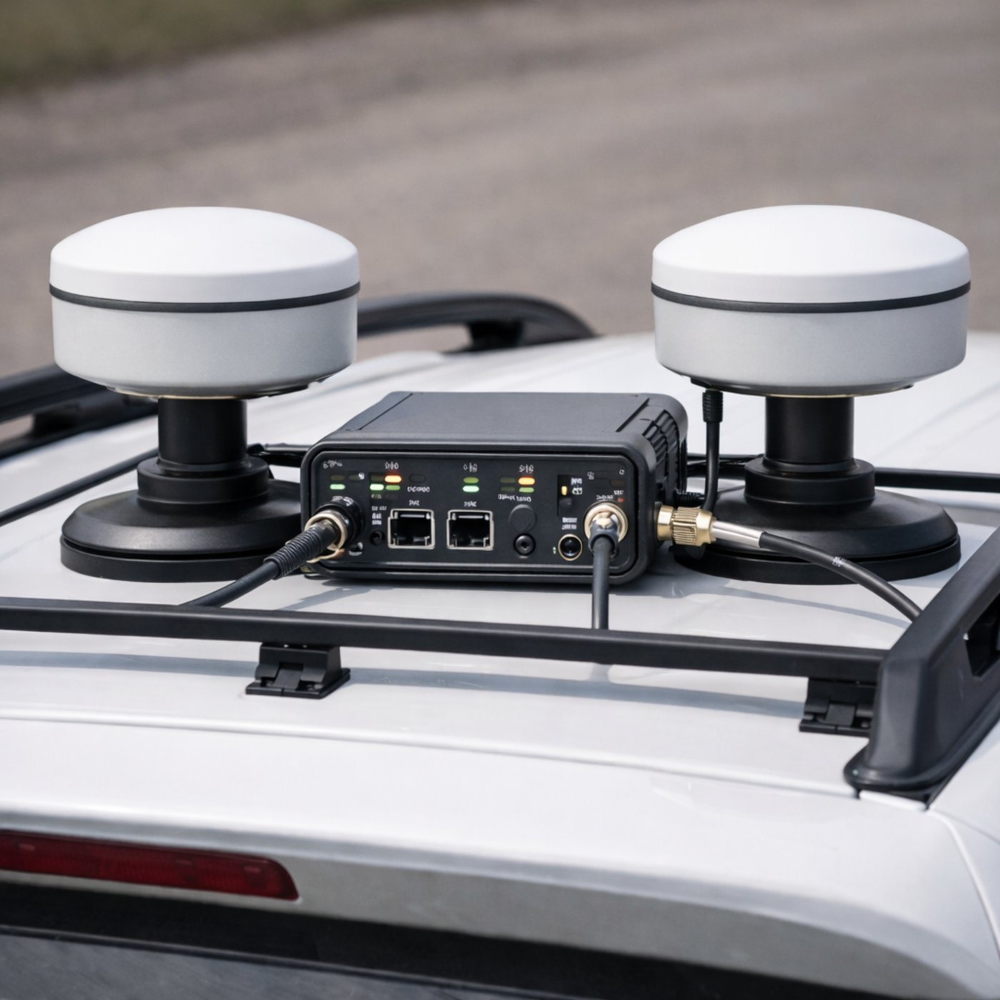
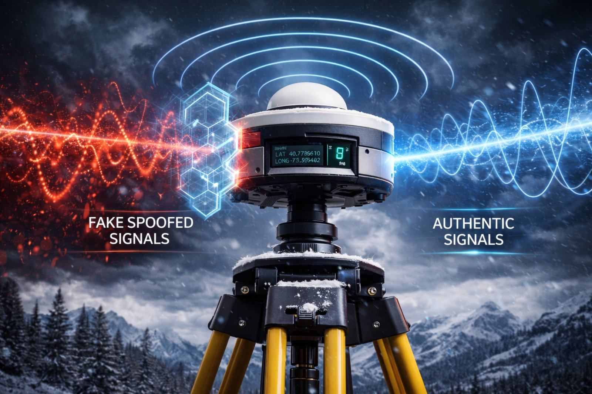

01 — GNSS Receivers
High-Precision RTK GNSS Receivers
Designed for surveying, construction, and industrial applications where accuracy, repeatability, and field reliability are essential.
- Multi-frequency, multi-constellation GNSS support
- Centimeter-level RTK positioning performance
- Rugged mechanical design for harsh field conditions
- Suitable for fixed and mobile deployment scenarios
Typical applications: land surveying, construction layout, machine control, infrastructure measurement.

02 — Heading & North Finding
Dual-Antenna GNSS Heading & North Finding Systems
Accurate orientation systems for applications that require stable heading, direction reference, and reliable performance without relying on movement-based initialization.
- Precise dual-antenna heading and orientation
- Fast heading output for dynamic applications
- Robust operation in difficult RF and motion conditions
- Engineered for practical integration into vehicles and platforms
Typical applications: marine navigation, defense-related systems, vehicle navigation, autonomous platforms.
03 — Timing Systems
High-Precision Timing Systems
GNSS-based synchronization solutions for critical infrastructure and distributed systems that depend on stable and traceable time.
- Support for PPS, NTP, and PTP synchronization
- Reliable GNSS time distribution architecture
- Designed for operational continuity in professional environments
- Scalable deployment for diverse network requirements
Typical applications: telecom networks, utilities, data centers, industrial synchronization, critical infrastructure.

04 — PNT Solutions
Integrated Positioning, Navigation, and Timing Solutions
Combined GNSS, sensor, and algorithm-based systems built to maintain reliable performance where standalone GNSS may be challenged.
- Integrated GNSS, sensors, and processing algorithms
- Improved resilience in degraded and challenging environments
- Architecture suited for high-reliability deployment
- Flexible configuration for application-specific needs
Typical applications: autonomous systems, robotics, remote operations, resilient navigation, mission-critical field systems.

05 — Sensors & Modules
Sensors, IMU, and OEM Modules
Supporting components for customers building integrated systems and embedded solutions that require dependable motion and positioning inputs.
- IMU and inertial sensing support for integrated platforms
- Compact modules suitable for OEM and embedded use
- Scalable system integration options
- Practical fit for advanced control and navigation systems
Typical applications: OEM integration, robotics, embedded systems, industrial control, sensor fusion platforms.